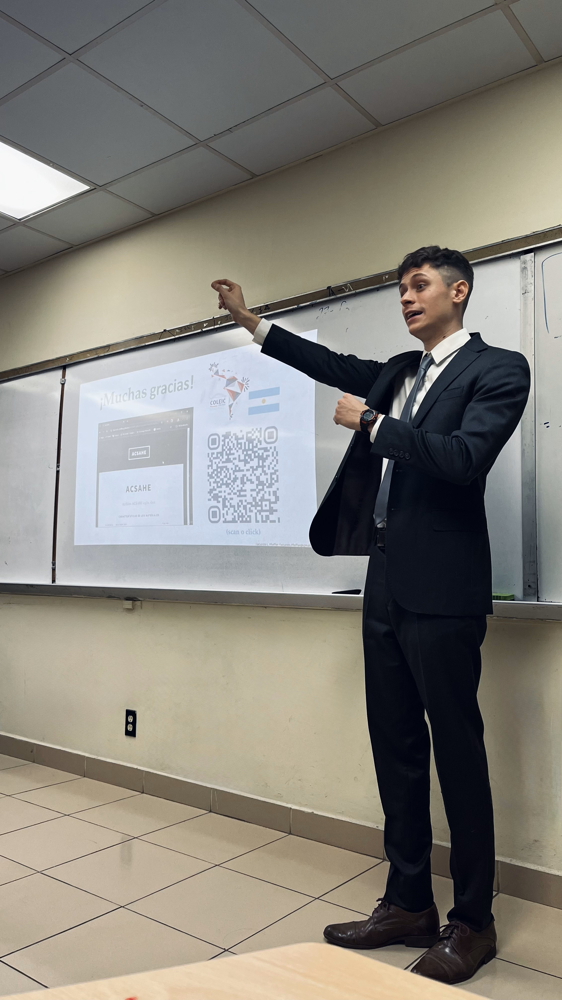

About Me

Introduction
I am a graduate student in the Structural Engineering, Mechanics and Materials (SEMM) program at the University of California, Berkeley. My passion lies in combining rigorous structural mechanics with modern computational methods to solve complex engineering challenges.
I aspire to become a structural engineer with a particular focus on bridge engineering. I try to reflect my goal with my academic and professional work, with experience in prestressed concrete bridge design, structural analysis, and development of computational tools that advance the field.
Research & Technical Interests
SDOF/MDOF systems, response spectrum analysis, time-history analysis
Prestressed concrete design, seismic design, AASHTO LRFD specifications
Finite element analysis, numerical integration, nonlinear analysis
Seismic retrofit, ground motion characterization, dynamic response
Scientific computing, interactive visualization, educational tools
ACI 318, AASHTO LRFD, ASCE 7, AISC 360, LA Building Code
Education
University of California, Berkeley | Expected May 2026
Coursework: Reinforced Concrete Design, Structural Dynamics, Structural Analysis, Solid Mechanics
National University of Rosario (UNR), Argentina | July 2024
Engineering School's 2024 Valedictorian | Highest GPA's Honor
Final GPA: 9.20/10.00 (Converted to 3.96/4.00 by WES)
Coursework: Earthquake Engineering, Bridge Design, Prestressed Concrete Design
National University of Rosario (UNR), Argentina | December 2019
Final GPA: 9.00/10.00 | Highest GPA's Honor
Professional Experience
VictoryBridge | 2024–2025 (Remote, U.S.)
- Verified and refined seismic retrofit design for a 6,400-ft² unreinforced masonry building in Los Angeles to ensure compliance with LA Building Code Chapter 16.
- Performed seismic load evaluation (2022 CBC, ASCE 7-22), evaluated URM walls (TMS 402/602-22), RC bond beams (ACI 318-19), and bolted steel connections (AISC 360-22).
- Designed slope-stabilization caisson system for a three-level, 22,000-ft² hillside residential house in Los Angeles per ACI 318-19(22) and ASCE 7-16.
Institute of Applied Mechanics & Structures (IMAE) | 2022–2025 (Rosario, Argentina)
- ACSAHE Software Development: Independently developed a Python application that generates 3D interaction diagrams of combined axial-force/biaxial-bending for prestressed concrete sections per ACI 318-19(22). Awarded best civil engineering project in LATAM by a panel of three judges from industry and academia (Panama). Software is being taught at universities and used by companies. [Project Site]
- 60-Meter Prestressed Concrete Bridge Design: Designed a 60-m beam bridge per AASHTO LRFD specifications. Performed prestressed concrete beam section analysis (ACI 318-19 with ACSAHE), concrete deck and bearing modeling in STAAD.Pro for LRFD and serviceability checks.
- Large Steel Industrial Tank Analysis: Designed the shell and roof of a 50-m diameter oil tank (API-650). Analyzed geometric nonlinearity and imperfections, comparing linear vs non-linear buckling to optimize design. Designed IPE roof girders (AISC 360-22) and calculated wind loads (ASCE 7-22).
Connectist (formerly BairesDev) | 2019–2025 (Remote, U.S.)
- Directed the Data Engineering R&D department (6 members).
- Designed event-driven Python projects, AWS cloud architectures, and databases to automate data workflows.
- Conducted technical interviews and performance evaluations for senior developers and managers.
DGZ Engineering Solutions | 2018 (Rosario, Argentina)
- Supervised construction of a ten-story reinforced concrete building during pile foundation and superstructure stages.
Honors & Recognition
- Best LATAM Undergraduate Civil Engineering Research — 1st place, COLEIC 2024 (Panama City). Awarded by a panel of three judges from industry and academia based on paper and oral presentation.
- Best Argentine Structural Engineering Undergraduate Project — AIE 2024.
- Engineering School's 2024 Valedictorian — National University of Rosario (Highest GPA).
- Fulbright Alumni & Exchange Student — University of Alabama (2021). Granted Friends of Fulbright scholarship by the Fulbright Commission in Argentina. Took graduate courses in Statistics and in Sustainability and Management.
- Highest GPA's Honor — Construction Management Program (2019).
Publications & Presentations
- Structural optimization and geometric nonlinearity studies for large welded oil tanks — 40th MECOM 2024 Journals (Argentina).
- ACSAHE: Automated strength determination for arbitrary concrete sections — JIT 2023 Young Researchers Congress (Paraguay/Uruguay).
Technical Skills
Structural Analysis Software
- STAAD.Pro (Proficient).
- COMSOL Multiphysics (Proficient).
- SAP2000 (Intermediate).
- CSI Bridge (Intermediate).
- XTRACT (Intermediate).
- ENERCALC.
Programming & Development
- Python (Proficient): NumPy, SciPy, Plotly.
- C++ (Intermediate).
- Amazon Web Services (Proficient).
- Relational Databases (Proficient).
- Continuous Integration Tools (Proficient).
Design & Productivity
- AutoCAD (Proficient).
- Revit (Proficient).
- Lumion (Proficient).
- Excel (Proficient).
- Word (Proficient).
- LaTeX (Proficient).
Highlighted Open‑Source
ACSAHE — Automated Strength Determination of arbitrary reinforced/prestressed concrete sections per ACI 318‑19(22) Ch.22. Project page · Source code
Current Graduate Coursework
As part of my MS program at UC Berkeley, I am taking advanced courses in:
Prof. Matthew DeJong
Advanced matrix methods and beam theory
Material behavior and constitutive modeling
ACI 318 code applications
Professional Goals & Career Vision
I am committed to becoming a structural engineer specializing in bridge engineering. My career vision centers on designing resilient, innovative infrastructure that serves communities:
- Bridge the gap between academic knowledge and practical engineering applications.
- Develop computational tools that enhance structural analysis workflows, especially for bridge engineers.
- Mentor future engineers once I have more experience down the road.
Portfolio Overview
This portfolio showcases my passion for structural engineering and reflects the work that drives me to continuously learn and contribute to the field. It features:
60-meter prestressed concrete bridge per AASHTO LRFD
Management of cross-functional R&D engineering teams
Experience with geometric nonlinearity and advanced numerical implementations
ACSAHE concrete analysis tool recognized as best LATAM civil engineering project
Contact Information
Primary Contact
Email: facundo.pfeffer@berkeley.edu
Phone: +1 (510) 717-3714
LinkedIn: linkedin.com/in/facundopfeffer
Institution: University of California, Berkeley
Program: MS in Structural Engineering, Mechanics and Materials
Location: Berkeley, California